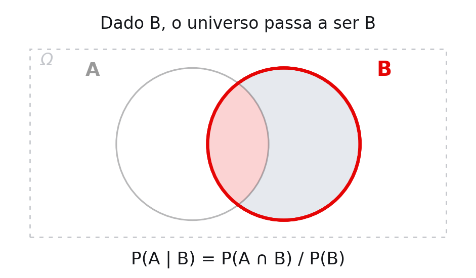
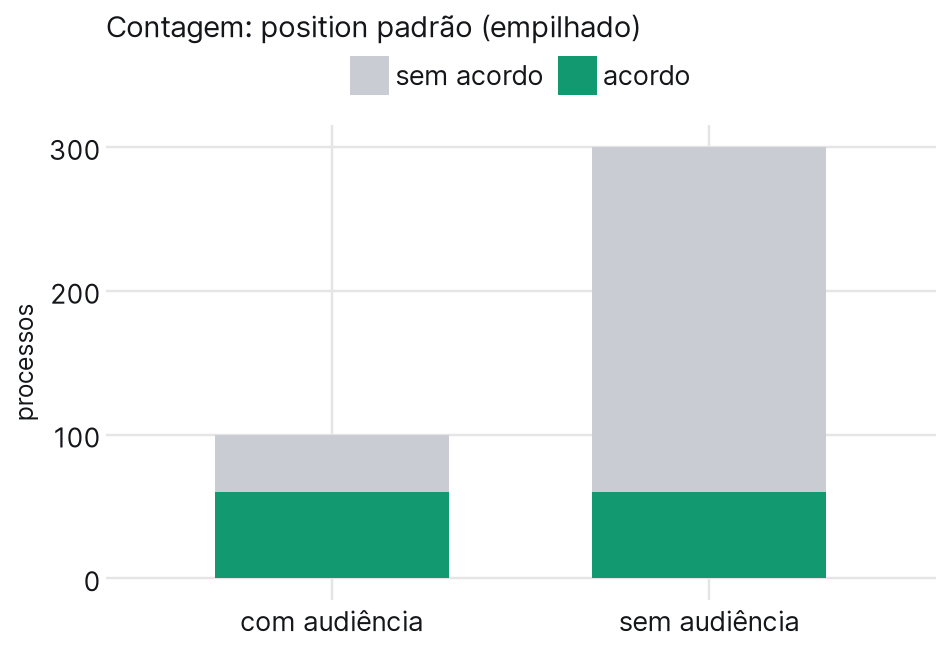
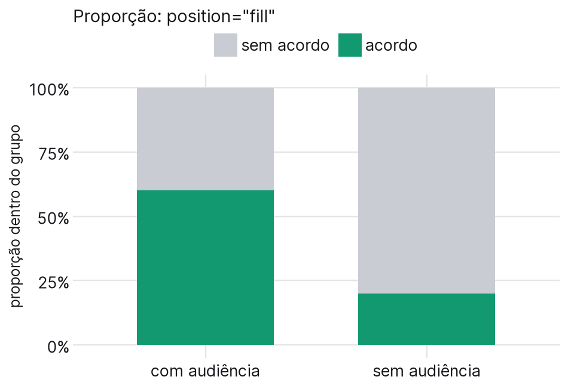
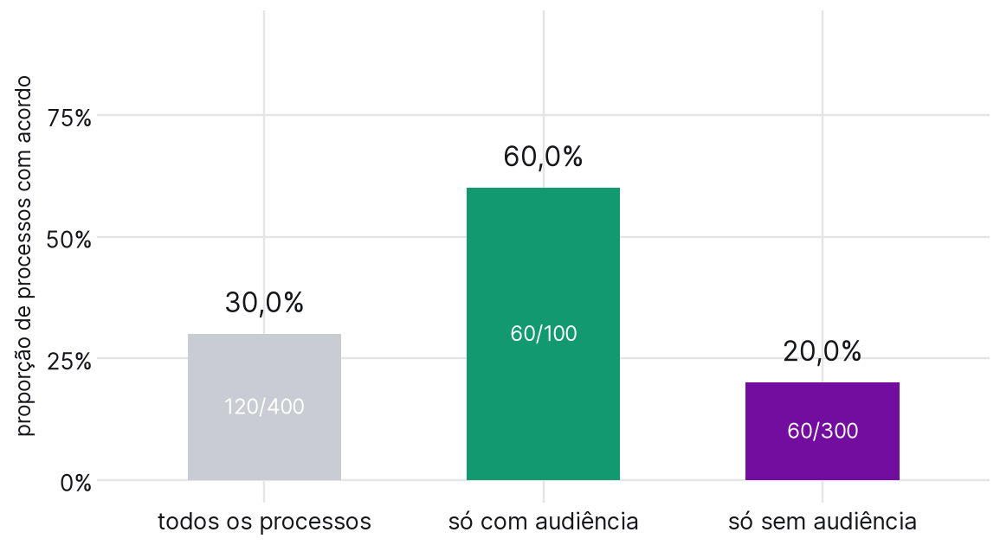

Aula 8 · Ciência de Dados Aplicada ao Direito II
03/09/2026
Ao final desta aula, você deve ser capaz de:
calcular probabilidades condicionais lendo a tabela de dupla entrada em linha, e decidir se dois eventos são independentes;
aplicar o teorema de Bayes para inverter uma condicional, e reconhecer os erros que a inversão errada produz em juízo;
montar a distribuição de uma variável aleatória e calcular a esperança dela, reconhecendo o caso discreto e o contínuo.
Na terça montamos a tabela e definimos a condicional. Hoje começamos usando as duas, num estudo diferente.
o estudo de hoje
Uma pesquisa acompanhou 400 processos de um Juizado Especial Cível, cruzando duas informações: se houve audiência de conciliação e se o processo terminou em acordo.
| acordo | sem acordo | total | |
|---|---|---|---|
| com audiência | 60 | 40 | 100 |
| sem audiência | 60 | 240 | 300 |
| total | 120 | 280 | 400 |
Base ilustrativa, com números escolhidos para fechar de cabeça.
| acordo | sem acordo | total | |
|---|---|---|---|
| com audiência | 60 | 40 | 100 |
| sem audiência | 60 | 240 | 300 |
| total | 120 | 280 | 400 |
em duplas, 5 minutos
Sorteando um processo ao acaso entre os 400:
a) \(P(\text{acordo})\)
b) \(P(\text{com audiência})\)
c) \(P(\text{acordo} \cap \text{com audiência})\)
d) \(P(\text{acordo} \cup \text{com audiência})\)
respostas
a) \(120/400 = 0\text{,}30\)
b) \(100/400 = 0\text{,}25\)
c) \(60/400 = 0\text{,}15\), a célula do canto
d) \(0\text{,}30 + 0\text{,}25 - 0\text{,}15 = 0\text{,}40\)
interseção
É uma célula do miolo: 60 processos que têm as duas coisas.
\[P(A \cap B) = \frac{60}{400}\]
marginal
É a borda: 120 acordos, somando as duas linhas.
\[P(A) = \frac{120}{400}\]
união
Somar as duas bordas conta o canto duas vezes, e por isso ele volta:
\[P(A \cup B) = P(A) + P(B) - P(A \cap B)\]
Na tabela: \(120 + 100 - 60 = 160\), que são os processos fora da célula “sem audiência e sem acordo”.
A pergunta muda de “qual a chance disso?” para “qual a chance disso, sabendo aquilo?”.

definição
\[P(A \mid B) = \frac{P(A \cap B)}{P(B)}, \quad P(B) > 0\]
Condicionar é trocar o espaço amostral: os resultados fora de \(B\) deixam de existir, e \(B\) passa a ser o universo.
Na tabela de hoje, sabendo que houve audiência:
\[P(\text{acordo} \mid \text{audiência}) = \frac{0\text{,}15}{0\text{,}25} = 0\text{,}60\]
Contagens
| acordo | sem acordo | total | |
|---|---|---|---|
| com audiência | 60 | 40 | 100 |
| sem audiência | 60 | 240 | 300 |
Cada linha dividida pelo próprio total
| acordo | sem acordo | total | |
|---|---|---|---|
| com audiência | 0,60 | 0,40 | 1,00 |
| sem audiência | 0,20 | 0,80 | 1,00 |
a tabela de condicionais
Cada linha agora soma 1, porque cada linha virou um espaço amostral próprio. A primeira linha é \(P(\cdot \mid \text{com audiência})\) e a segunda é \(P(\cdot \mid \text{sem audiência})\).

geom_bar() empilhado: a altura total é a marginal, e os dois grupos têm tamanhos bem diferentes.

position="fill": cada barra vai a 100%, e a divisão interna é a linha de condicionais do slide anterior.

Saber se houve audiência muda a probabilidade de acordo: de 30% para 60% de um lado e para 20% do outro.
dependência e independência
Quando \(P(A \mid B) \neq P(A)\), os eventos são dependentes.
Quando \(P(A \mid B) = P(A)\), são independentes, e só nesse caso vale \(P(A \cap B) = P(A) \times P(B)\).
a pergunta
Se audiência e acordo fossem independentes, quantos processos teriam as duas coisas?
o esperado
\[P(A) \times P(B) = 0\text{,}30 \times 0\text{,}25 = 0\text{,}075\]
Em 400 processos, isso são 30.
o observado
A tabela tem 60, o dobro do esperado.
Os eventos não são independentes, e é disso que se trata dizer que a audiência tem relação com o acordo.
no seu celular
Acabamos de ver que \(P(\text{acordo} \mid \text{audiência}) = 60/100 = 0\text{,}60\).
Agora a inversa: qual conta dá \(P(\text{audiência} \mid \text{acordo})\)?
60/400 · 60/100 · 60/120 · 100/400
As quatro contas usam números da mesma tabela. O que muda é o denominador.
jtrecenti.github.io/cdad2-202662/quiz
\(P(A \mid B)\) e \(P(B \mid A)\) são números diferentes. Trocar um pelo outro é o erro de probabilidade mais caro que existe em processo.
a condicional que já calculamos
\[P(\text{acordo} \mid \text{audiência}) = \frac{60}{100} = 0\text{,}60\]
Divide pela linha: dos 100 que foram à audiência, 60 fecharam acordo.
a inversa
\[P(\text{audiência} \mid \text{acordo}) = \frac{60}{120} = 0\text{,}50\]
Divide pela coluna: dos 120 acordos, 60 vieram de audiência.
o ponto
Aqui deu para ler direto na tabela. Uma forma mais direta de fazer essa inversão é o teorema de Bayes, que resolve o mesmo problema com uma conta só, e serve numa porção de situações em que a tabela não está à mão.
o caso
Uma auditoria encaminhou ao instituto de criminalística os 10.000 contratos de um lote. Em geral, 1 em cada 100 tem assinatura falsificada.
Um contrato acabou de ser apontado pela perícia. Qual a probabilidade de a assinatura ser mesmo falsa?
por que a resposta muda o processo
Se a resposta for alta, o laudo praticamente decide a causa. Se for baixa, ele sozinho não decide nada, e quem defende vai querer que o juiz saiba disso.
Anote o seu palpite antes de fazermos a conta.
“Em documentos autênticos, o exame acusa falsidade em 1% das vezes.”
\[P(\text{exame acusa falsidade} \mid \text{documento autêntico})\]
O perito chega a esse número testando documentos que sabe serem autênticos. É uma propriedade do exame, e é o que está no laudo.
“O exame acusou falsidade do documento. Qual a chance de ele ser autêntico?”
\[P(\text{documento autêntico} \mid \text{exame acusa falsidade})\]
É a pergunta do juiz, e ela não está no laudo. Depende de informações que o exame não tem, como quantos documentos daquele lote já eram falsos antes de qualquer perícia.
10.000 contratos do lote
100 assinatura falsa (1%)
99 apontados
1 passa
9.900 autênticos
99 apontados por engano (1%)
9.801 passa
São apontados \(99 + 99 = 198\) contratos, e metade tem assinatura falsa: \(P(\text{falso} \mid \text{apontado}) = 99/198 = 0\text{,}50\).
a fórmula
\[P(A \mid B) = \frac{P(B \mid A) \times P(A)}{P(B)}\]
Ela troca o lado da barra: entra a condicional que você tem e sai a que você quer.
com os eventos do caso
\[P(\text{falso} \mid \text{apontado}) = \frac{P(\text{apontado} \mid \text{falso}) \times P(\text{falso})} {P(\text{apontado})}\]
Os dois números de cima estão no enunciado: \(0\text{,}99\) e \(0\text{,}01\). Falta o de baixo.
quem são os apontados
Um contrato apontado ou é falso, ou é autêntico. Então basta somar os dois caminhos:
\[P(\text{apontado}) = P(\text{apontado} \mid \text{falso})\,P(\text{falso}) + P(\text{apontado} \mid \text{autêntico})\,P(\text{autêntico})\]
a conta
\[P(\text{apontado}) = 0\text{,}99 \times 0\text{,}01 + 0\text{,}01 \times 0\text{,}99 = 0\text{,}0198\]
\[P(\text{falso} \mid \text{apontado}) = \frac{0\text{,}99 \times 0\text{,}01}{0\text{,}0198} = \frac{0\text{,}0099}{0\text{,}0198} = 0\text{,}50\]
a conta da acusação
Sally Clark perdeu dois filhos bebês com poucos meses de diferença. Um pediatra testemunhou que a probabilidade de morte súbita numa família como a dela era de 1 em 8.543, e que duas vezes seria:
\[\frac{1}{8543} \times \frac{1}{8543} = \frac{1}{73\ \text{milhões}}\]
Ela foi condenada.
o erro
A multiplicação simples exige independência. Dois irmãos compartilham genética, ambiente e hábitos: uma família que perdeu um filho tem risco maior que a população, e não igual.
A Royal Statistical Society publicou nota em 2001. A condenação foi anulada em 2003.
a conta
Um casal foi acusado de roubo. O promotor multiplicou as probabilidades das características descritas pelas testemunhas: carro amarelo (1/10), homem de bigode (1/4), mulher de rabo de cavalo (1/10), mulher loira (1/3), homem negro de barba (1/10), casal inter-racial de carro (1/1000).
Produto: 1 em 12 milhões.
a Suprema Corte da Califórnia anulou
as probabilidades não tinham base empírica;
os eventos não são independentes: bigode e barba andam juntos;
a condicional foi trocada: numa região com milhões de casais, existir outro casal com o mesmo perfil não é desprezível.
o caso
Uma participante chegou à pergunta final, de R$ 1 milhão. A pergunta tinha quatro alternativas e nenhuma delas estava correta. Ela desistiu, ficou com os R$ 500 mil acumulados e processou a emissora pela chance perdida.
a conta do acórdão
Eram quatro alternativas, logo a chance de acertar seria de 1 em 4.
Indenização: 25% de R$ 500 mil, ou seja, R$ 125 mil.
o que essa conta assume
Contar alternativas só dá \(1/4\) se elas forem igualmente prováveis e se uma delas estiver certa.
Nenhuma das duas valia aqui. Sem resposta correta, a chance de acertar não era \(1/4\): era zero.
E numa pergunta bem feita, quem acertou todas as anteriores não é quem chuta.
Até aqui, um evento por vez. A partir de agora, todos os resultados possíveis de uma vez, cada um com a sua probabilidade.
o caso
Uma advogada de um escritório de cobrança tem duas audiências de conciliação por dia. Em cada uma, a chance de sair acordo é de 0,20, e uma audiência não influencia a outra. Cada acordo fechado rende R$ 500 de honorários de êxito.
Quanto ela ganha no dia?
| 1ª audiência | 2ª audiência | ganho | probabilidade |
|---|---|---|---|
| acordo | acordo | 1.000 | \(0{,}2 \times 0{,}2 = 0{,}04\) |
| acordo | sem | 500 | \(0{,}2 \times 0{,}8 = 0{,}16\) |
| sem | acordo | 500 | \(0{,}8 \times 0{,}2 = 0{,}16\) |
| sem | sem | 0 | \(0{,}8 \times 0{,}8 = 0{,}64\) |
juntando os repetidos
Ganhar 500 acontece de duas maneiras, e as duas contam:
\[0{,}16 + 0{,}16 = 0{,}32\]
As multiplicações acima só valem porque as audiências são independentes, que é exatamente o que verificamos há pouco na tabela.
definição
Uma variável aleatória é uma função que leva elementos do espaço amostral \(\Omega\) em valores numéricos.
E para cada valor numérico que ela assume, sabemos atribuir uma probabilidade.
No exemplo, \(\Omega\) tem quatro elementos, e \(X\) é o ganho do dia:
\[X(\text{acordo, acordo}) = 1000\] \[X(\text{acordo, sem}) = 500\] \[X(\text{sem, sem}) = 0\]
Repare que \(X\) leva quatro resultados em três números.
a distribuição de \(X\)
| \(x\) | \(P(X = x)\) |
|---|---|
| 0 | 0,64 |
| 500 | 0,32 |
| 1.000 | 0,04 |
| total | 1,00 |
Essa tabela inteira é a distribuição de \(X\): os valores possíveis e a probabilidade de cada um.
esperança
A média dos valores possíveis, cada um pesado pela sua probabilidade:
\[E(X) = 0 \times 0{,}64 + 500 \times 0{,}32 + 1000 \times 0{,}04\]
\[E(X) = 0 + 160 + 40 = \textbf{200 reais}\]
cuidado
200 não é um resultado possível. Num dia ela ganha 0, 500 ou 1.000, nunca 200.
A esperança é o que sai na média ao longo de muitos dias, e é isso que serve para orçar o mês ou comparar duas formas de remuneração.
Confere pelo atalho: duas audiências vezes 0,20 de chance vezes 500 reais dá os mesmos 200.
discreta
Assume valores separados, que dá para listar: 0, 500, 1.000.
A distribuição é a tabela que acabamos de montar, e a probabilidade de um valor faz sentido: \(P(X = 500) = 0{,}32\).
Exemplo mais simples de todos: a Bernoulli, que só assume 0 e 1.
contínua
Assume qualquer valor de um intervalo: o tempo de tramitação de um processo pode ser 412 dias, ou 412,7, ou 412,73.
Aqui \(P(X = 412{,}73) = 0\), e a pergunta que faz sentido é por faixa: qual a chance de levar entre 400 e 500 dias.
Exemplo mais comum de todos: a normal, daqui a dois slides.
É a mesma classificação de variáveis da aula 2, agora aplicada ao que a probabilidade descreve.
quando usar
O fenômeno tem dois resultados, e você chama um deles de sucesso.
\[X \sim \text{Bernoulli}(p)\]
| \(x\) | \(P(X = x)\) |
|---|---|
| 1 (sucesso) | \(p\) |
| 0 (fracasso) | \(1 - p\) |
no exemplo de hoje
Cada audiência, sozinha, é uma Bernoulli com \(p = 0{,}20\). O ganho do dia é o que sai de duas delas somadas.
Na tabela do começo da aula: sortear um processo e perguntar se houve acordo é uma Bernoulli com \(p = 0{,}30\).
esperança
\[E(X) = 1 \times p + 0 \times (1-p) = p\]
Por isso a média de uma coluna de sim ou não é a proporção de sins. É a conta que fizemos a aula inteira, agora com nome.
html`<div style="line-height:1.6">
A média <b>μ</b> diz onde a curva fica; o desvio-padrão <b>σ</b> diz o
quanto ela se espalha. Aqui, <b>68%</b> das perícias levam entre
<b>${mu - sigma}</b> e <b>${mu + sigma}</b> dias, e <b>95%</b> levam entre
<b>${mu - 2 * sigma}</b> e <b>${mu + 2 * sigma}</b> dias. As faixas mudam de
largura, mas a área pintada é sempre a mesma.
</div>`cada coluna é uma variável aleatória
Sortear uma linha da base é o fenômeno aleatório. Cada coluna é então uma função que leva essa linha num número:
houve_acordo leva em 0 ou 1;dias_de_tramitacao leva num número de dias;valor_da_causa leva em reais.A coluna guarda os valores observados; a variável aleatória descreve o que poderia sair.
e o que é um modelo
Na maior parte das vezes não temos a base inteira, e sim uma amostra dela.
Aí supomos que a variável se distribui segundo uma distribuição conhecida: que houve_acordo é uma Bernoulli, que dias_de_tramitacao é aproximadamente normal. Isso é um modelo.
por que isso vale a pena
Com um modelo, poucos números da amostra bastam para dizer algo sobre o todo, e para dizer de quanto se pode estar errado.
É o que a aula 9 faz o tempo inteiro.
Seeing Theory
Visualizações interativas de probabilidade e estatística, feitas na Universidade Brown. Os capítulos Basic Probability, Compound Probability e Probability Distributions cobrem quase tudo que vimos hoje, e o de distribuições deixa você arrastar os parâmetros e ver a curva responder.
seeing-theory.brown.edu
como usar
Não é leitura obrigatória, e não cai no Projeto Aplicado 3.
Serve para quando a conta fizer sentido no papel mas o desenho não tiver ficado na cabeça. Mexer no parâmetro e ver a figura responder costuma resolver isso mais rápido do que reler a fórmula.
o que fica
Condicionar é trocar o denominador.
Independência é \(P(A \mid B) = P(A)\).
\(P(A \mid B) \neq P(B \mid A)\), e Bayes é a ponte entre as duas.
A taxa-base decide o resultado, e é ela que falta no laudo.
Variável aleatória leva o espaço amostral em números, e a distribuição diz a probabilidade de cada um.
para hoje
Notebook aula08: as mesmas contas em pandas, sobre uma base real de acórdãos.
terça-feira
Inferência: sair da amostra que se tem para a população que interessa, e dizer de quanto se pode errar.
GIGERENZER, G.; HOFFRAGE, U. How to improve Bayesian reasoning without instruction: frequency formats. Psychological Review, v. 102, n. 4, 1995.
MONTGOMERY, D.; RUNGER, G. Estatística aplicada e probabilidade para engenheiros. LTC. Capítulos 2 e 3.
SCHNEPS, L.; COLMEZ, C. Math on Trial. Basic Books, 2013.
STERN, R. B.; KADANE, J. B. Indemnity for a lost chance. Law, Probability and Risk, v. 18, n. 2-3, 2019.
BRASIL. Superior Tribunal de Justiça. REsp 788.459/BA, 2005.
// Desenho da normal em SVG na mao, sem biblioteca externa: o deck precisa
// abrir mesmo com a rede da sala caindo. A escala vertical e FIXA, calibrada
// pelo menor desvio da faixa, para que aumentar o sigma realmente achate a
// curva em vez de so reescalar o eixo e parecer que nada mudou.
curva_normal = function (mu, sigma) {
const L = 1120, A = 250, m = 36;
const x0 = 0, x1 = 120;
const ns = "http://www.w3.org/2000/svg";
const svg = document.createElementNS(ns, "svg");
svg.setAttribute("viewBox", "0 0 " + L + " " + A);
// tamanho fixo, e nao 100%: o slide tem largura fixa, e um SVG elastico
// dentro de um item flex empurra a coluna vizinha para fora da tela.
svg.setAttribute("width", "1120");
svg.setAttribute("height", "250");
svg.style.display = "block";
svg.style.margin = "0 auto";
const px = v => m + ((v - x0) / (x1 - x0)) * (L - 2 * m);
const dens = v => Math.exp(-0.5 * Math.pow((v - mu) / sigma, 2))
/ (sigma * Math.sqrt(2 * Math.PI));
const ymax = 1 / (4 * Math.sqrt(2 * Math.PI));
const py = d => A - m - (d / ymax) * (A - 2 * m);
function area(a, b, cor) {
a = Math.max(a, x0);
b = Math.min(b, x1);
let d = "M " + px(a) + " " + (A - m);
const passo = (b - a) / 160;
for (let v = a; v <= b; v += passo) d += " L " + px(v) + " " + py(dens(v));
d += " L " + px(b) + " " + (A - m) + " Z";
const p = document.createElementNS(ns, "path");
p.setAttribute("d", d);
p.setAttribute("fill", cor);
svg.appendChild(p);
}
area(mu - 2 * sigma, mu + 2 * sigma, "#bfe6d5");
area(mu - sigma, mu + sigma, "#12996f");
let d = "";
for (let i = 0; i <= 400; i += 1) {
const v = x0 + (i / 400) * (x1 - x0);
d += (i ? " L " : "M ") + px(v) + " " + py(dens(v));
}
const linha = document.createElementNS(ns, "path");
linha.setAttribute("d", d);
linha.setAttribute("fill", "none");
linha.style.stroke = "var(--texto)";
linha.setAttribute("stroke-width", 2.2);
svg.appendChild(linha);
const eixo = document.createElementNS(ns, "line");
eixo.setAttribute("x1", m);
eixo.setAttribute("x2", L - m);
eixo.setAttribute("y1", A - m);
eixo.setAttribute("y2", A - m);
eixo.style.stroke = "var(--texto-fraco)";
svg.appendChild(eixo);
// a media, tracejada, para a turma ver o centro andar junto com o controle
const centro = document.createElementNS(ns, "line");
centro.setAttribute("x1", px(mu));
centro.setAttribute("x2", px(mu));
centro.setAttribute("y1", py(dens(mu)));
centro.setAttribute("y2", A - m);
centro.setAttribute("stroke", "#e50505");
centro.setAttribute("stroke-width", 2);
centro.setAttribute("stroke-dasharray", "6 4");
svg.appendChild(centro);
[0, 20, 40, 60, 80, 100, 120].forEach(function (v) {
const t = document.createElementNS(ns, "text");
t.setAttribute("x", px(v));
t.setAttribute("y", A - m + 22);
t.setAttribute("text-anchor", "middle");
t.setAttribute("font-size", "15");
t.style.fill = "var(--texto-fraco)";
t.textContent = v;
svg.appendChild(t);
});
return svg;
}